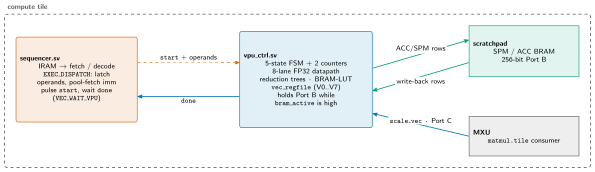
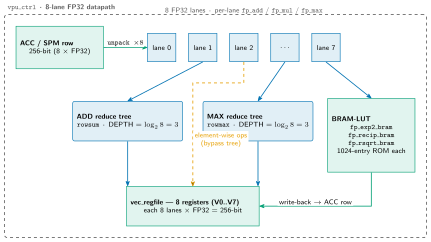
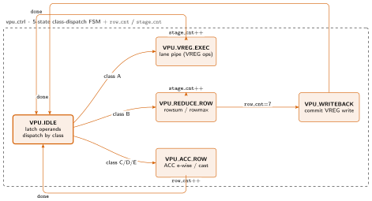
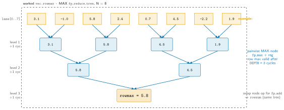

mininpu VPU: Vector Processing Unit Microarchitecture¶
The VPU is the SIMD vector engine of the compute tile: an 8-lane FP32 datapath with horizontal reductions, BRAM-LUT non-linear functions, and BF16/FP32 casts. It is the workhorse for everything in the GPT-2 forward pass that is not a matrix multiply: RMSNorm, softmax, residual adds, LayerNorm, and GELU activation. This document is the visual deep-dive; the exhaustive specifics (every FSM state, transition, and counter terminal) live in the RTL.
Source of truth: npu/src/compute_tile/vpu_ctrl.sv, npu/src/compute_tile/vec_regfile.sv, npu/src/compute_tile/fpu/fp_reduce_tree.sv, npu/src/compute_tile/fpu/fp_*.sv, npu/src/npu/npu_isa_pkg.sv (generated from mininpu/isa). Describes the post-refactor counter-based VPU (vpu_ctrl extracted from sequencer.sv).
Overview & placement¶
Slide summary (from the deck build)
- 8-lane FP32 vector engine: everything in the GPT-2 forward pass that is not a matmul.
- RMSNorm · softmax · residual add · LayerNorm · GELU activation.
- Lives in
vpu_ctrl.sv; driven by thesequencerover astart/donehandshake. - Owns scratchpad BRAM Port B while busy (
bram_active).
Figure: vpu-context

The sequencer pulses start; vpu_ctrl takes scratchpad BRAM Port B (bram_active), streams ACC/SPM rows, writes back, pulses done. Port C (vreg_rd_*_ext) is an external async VREG read port available to sibling engines.
The VPU performs 8-lane FP32 element-wise arithmetic, horizontal reductions, non-linear functions (exp2, reciprocal, rsqrt), and BF16↔FP32 casts. In the GPT-2 forward pass it covers RMSNorm, softmax (base-2 online), residual adds, LayerNorm, and GELU activation.
The VPU lives entirely inside vpu_ctrl.sv, which owns the 8-lane datapath, the non-linear BRAM lookup units, the two reduction trees, and the vector register file (vec_regfile). It is driven by the tile sequencer (sequencer.sv) over a simple start/done handshake. When busy it owns scratchpad BRAM Port B (the same wide 256-bit port the DMA/MXU use) and streams ACC/SPM tile rows through its datapath, writing results back to ACC rows or to its own vector register file. Port C (vreg_rd_addr_ext/vreg_rd_data_ext) is an external async VREG read port, exposed to sibling engines for future use while the VPU is idle.
Handshake contract¶
Slide summary (from the deck build)
start(in): 1-cycle pulse; allvpu_*operands stable on this cycle.done(out): 1-cycle pulse; Port B released after; sequencer leavesVEC_WAIT_VPU.bram_active(out): high whilevpu_state != VPU_IDLE; gatesstart.- Port C (
vreg_rd_*_ext): external async VREG read, available to sibling engines while VPU is idle.
Table: VPU start/done handshake signals and their contract.
| Signal | Dir | Meaning |
|---|---|---|
start |
in | 1-cycle pulse. All vpu_* operand inputs must be stable on this cycle (the sequencer pre-fetches any literal-pool immediates before pulsing). |
done |
out | 1-cycle pulse. BRAM Port B is released after this cycle; sequencer's VEC_WAIT_VPU state returns to fetch. |
bram_active |
out | High while vpu_ctrl holds scratchpad BRAM Port B (i.e. vpu_state != VPU_IDLE). The sequencer must not assert start while this is high. |
vreg_rd_addr_ext / vreg_rd_data_ext |
in/out | VREG read Port C, an external async combinational read exposed to sibling engines while the VPU is idle. |
Vector register file: vec_regfile.sv¶
Slide summary (from the deck build)
- 8 registers V0--V7, each 8 lanes × FP32 = 256 bits.
- 3 async read ports (A, B, C); 1 sync write port (
wr_en). - Port A/B: internal operand reads for VREG ops; Port C: external (MXU
scale_vec).
vec_regfile.sv: 8 registers V0--V7, each 8 lanes × FP32 = 256 bits.
Table: Vector register file (vec_regfile.sv) parameters as built (RTL is authoritative).
| Property | Value |
|---|---|
| Registers | 8 (NUM_REGS=8), addressed by a 3-bit index |
| Lanes / register | 8 (NUM_ELEMS = BANKING = 8) |
| Element width | 32 bits (ELEM_WIDTH=32, FP32) |
| Register width | 256 bits |
| Total size | 8 × 256 b = 2048 b = 256 B |
| Read ports | 3, all asynchronous (combinational): A, B, C |
| Write port | 1, synchronous (registered, on wr_en) |
| Reset | All registers cleared to zero |
- Port A / Port B: the two internal operand reads used by all VREG-to-VREG ops (e.g.
fmareads A=src, B=multiplicand;sub.vregreads A-B). - Port C (
rd_addr_c/rd_data_c): external async read, wired tovreg_rd_addr_extand exposed to sibling engines while the VPU is idle.
Note: the GLOSSARY's "tutorial" framing says 16 elements/register; the implemented RTL is parameterized at BANKING=8 lanes, so a register is 8×FP32. The text above reflects the RTL as built.
The 8-lane datapath¶
Slide summary (from the deck build)
- 256-bit ACC/SPM row unpacks into 8 FP32 lanes (
BANKING = 256/32 = 8). - Per-lane
fp_add/fp_mul/fp_max. - Two horizontal trees: ADD (
rowsum) + MAX (rowmax). - Three shared BRAM-LUT units:
exp2/recip/rsqrt.
Figure: vpu-datapath

A 256-bit row fans into 8 FP32 lanes (per-lane fp_add/fp_mul/fp_max); rowsum/rowmax use two fp_reduce_tree (DEPTH =3); transcendentals use three BRAM-LUTs. Results write to vec_regfile (8 registers) or back to an ACC row.
One zoom level in: the structure inside vpu_ctrl. A 256-bit ACC/SPM row unpacks into 8 FP32 lanes (BANKING = SPAD_DATA_WIDTH / DATA_WIDTH = 256/32 = 8). Each lane owns its own ALU primitives (fp_add, fp_mul, fp_max). Two horizontal paths fan the 8 lanes into a scalar: an ADD reduction tree (rowsum) and a MAX reduction tree (rowmax). Three shared BRAM-LUT non-linear units (exp2 / recip / rsqrt) serve the transcendental paths (softmax, GELU, RMSNorm). Results land in the vector register file (8 registers V0--V7, each 8×FP32) or back to an ACC row. The ACC tile in scratchpad is shared with the MXU.
Every lane is built from synthesisable behavioral IEEE-754 FP32 primitives (the cvfpu/fpnew submodule was fully removed; these models map to LUTs/DSP48E2 at synthesis and to DPI-C in Verilator sim). The primitive files and modules were historically named fp32_*; both the files and the modules are now fp_* (e.g. fp_add, fp_mul), under npu/src/compute_tile/fpu/.
FP primitives¶
Slide summary (from the deck build)
fp_add: 0/1-cycle (LATENCY); VPU usesLATENCY=1(2-stage).fp_mul: combinational; Vivado infers a DSP48E2 (24×24 mantissa).fp_max: combinational IEEE-754-2008maxNum.exp2/recip/rsqrt: 1024-entry registered BRAM LUTs.
Table: FP primitive modules used by the VPU, their latency, and their role in the datapath.
| Primitive | Latency | Notes |
|---|---|---|
fp_add (fp_add.sv) |
0 or 1 cycle (LATENCY param) |
IEEE-754 add. LATENCY=0 = fully combinational. LATENCY=1 = 2-stage pipeline (see below). The VPU instantiates every adder at LATENCY=1. |
fp_mul (fp_mul.sv) |
combinational | IEEE-754 multiply; Vivado infers a DSP48E2 for the 24×24 mantissa product. LATENCY is ignored (always combinational; the FSM provides settling time). |
fp_max (fp_max.sv) |
combinational | IEEE-754-2008 maxNum (NaN-quieting, +0 > -0). Used by the MAX reduction tree (vpu.rowmax). |
fp_exp2_bram (fp_exp2_bram.sv) |
registered BRAM LUT | 1024-entry × 23-bit ROM for 2^x. Backs vpu.exp2 (softmax) and the vpu.gelu GELU approximation path. The VPU FSM allows the full multi-stage settling window (see Sec. the referenced figure). |
fp_recip_bram (fp_recip_bram.sv) |
1-cycle registered BRAM LUT | 1/x. Backs vpu.div.bcast (softmax denominator). |
fp_rsqrt_bram (fp_rsqrt_bram.sv) |
1-cycle registered BRAM LUT | 1/sqrt(x). Backs vpu.rsqrt (RMSNorm). |
bf16_to_fp32 / fp32_to_bf16 |
combinational | Per-lane BF16↔FP32 cast converters (v1 storage type is BF16). Back acc.store 0x30, acc.load 0x31, and vreg.load 0x32. |
Why BRAM-LUT non-linear units?. The previous combinational Horner/Newton chains for exp2/recip/rsqrt cost ~31 FP units and blew the LUT budget on ZCU102. Replacing them with 1024-entry registered ROMs (one BRAM each) cut roughly 90K LUTs while staying within ≤0.1% error: acceptable for attention/normalization.
fp_add LATENCY=1: the 2-stage pipeline split. A fully combinational FP32 add is a ~36-logic-level chain and was a critical path. LATENCY=1 splits it into two ~18-level halves with one pipeline register between them:
Table: Two pipeline stages of fp_add at LATENCY=1, splitting the 36-level combinational chain.
| Stage | Work |
|---|---|
| S1 (before the FF) | Special-case detection (NaN/Inf/zero), exponent compare, mantissa alignment (shift the smaller operand), and the mantissa add/subtract. Outputs the sign, larger exponent, and 25-bit sum mantissa into the pipeline register. |
| S2 (after the FF) | Normalization: leading-zero detect + shift, exponent fix-up, overflow/underflow/denormal handling, and final FP32 assembly. |
In Verilator the DPI-C model is combinational regardless of LATENCY; correctness comes from the caller's stage_cnt reserving the right number of cycles, not from physical register delay. So sim and synthesis agree bit-for-bit as long as the FSM waits the documented number of stages.
Why not one big FSM?¶
Slide summary (from the deck build)
- Pre-refactor: 44-state monolith (one named state per pipeline step per opcode).
- Wrong shape: does not scale, error-prone, wastes the sequencer's state-enum budget.
- Industry pattern: small class-dispatch FSM + counters (Ara ~6-state VALU; NVDLA = descriptor/counter-driven).
- Refactor: 6 states + 2 counters, datapath unchanged, every opcode bit-identical.
The pre-refactor VPU was a 44-state monolithic FSM with one named state per pipeline step per opcode. That is the wrong shape: it does not scale (every new opcode adds states), it is error-prone, and it wastes the sequencer's state-enum budget. The industry pattern for a vector ALU is a small class-dispatch FSM plus counters:
- Ara (PULP RVV vector unit) uses a ~6-state VALU controller and lets element counters drive iteration.
- NVDLA deliberately keeps no compute-sequencing FSM in the math datapath: control is descriptor + counter driven.
The refactor collapses the 44 named states into 5 states + 2 counters. All datapath logic, pipeline registers, and arithmetic instances are unchanged; only the sequencing changed. Per-op cycle counts are derived from localparam terminal values (no magic numbers) and reproduce the old FSM exactly, so every opcode is bit-identical.
The 5 states (conceptual)¶
Slide summary (from the deck build)
- A 3-bit enum (
vpu_state_t) dispatches each opcode class out ofVPU_IDLE. - Two counters drive all transitions:
row_cnt(8-row ACC loop),stage_cnt(pipeline stage).
Figure: vpu-fsm

The counter-based control FSM: VPU_IDLE dispatches by opcode class into one execution state. row_cnt loops 8 ACC rows, stage_cnt sequences pipeline stages, and a shared VPU_WRITEBACK terminal commits the VREG write before returning to VPU_IDLE with done.
A 3-bit enum (vpu_state_t) dispatches each opcode class from VPU_IDLE into one execution state; two counters (row_cnt for the 8-row ACC loop, stage_cnt for the pipeline stage within an op) drive all transitions:
Table: VPU FSM states and their roles; counters (row_cnt, stage_cnt) drive all intra-state transitions.
| State | Role |
|---|---|
VPU_IDLE |
Wait for start; latch all operands; dispatch by opcode class into one of the other states. |
VPU_VREG_EXEC |
VREG-to-VREG arithmetic through the lane pipe; [v1]-active: vpu.rsqrt (0x26), vpu.fma.imm (0x27). [Serving]-RESERVED VREG ops (0x20--0x25, 0x28--0x2A) target this state but have no RTL handler on main. Also the VREG-read prefix for broadcast ACC ops. |
VPU_REDUCE_ROW |
ACC→VREG horizontal reduction (rowsum / rowmax), one row per loop, 8 rows. |
VPU_ACC_ROW |
In-place ACC element-wise ops: vpu.exp2, vpu.gelu, scale/sub/div broadcast, vpu.scale.imm, vpu.zero.acc, two-source vpu.mul.acc/vpu.add.acc, and register load/store rows. |
VPU_WRITEBACK |
Shared terminal VREG write (used by rowsum/rowmax and vpu.load.imm). |
Single source of truth. The exact states, transitions, the per-opcode dispatch map, and every stage_cnt/row_cnt counter terminal (the ST_VREG_* / ST_ROW_* / REDUCE_* localparams) are documented as the header comment block of npu/src/compute_tile/vpu_ctrl.sv (the single source of truth). This document keeps only the concept; it does not restate the per-state transition table.
Instruction classes & pipeline timing¶
Slide summary (from the deck build)
- Each opcode class enters one state and loops a fixed number of pipeline stages per row.
- Reductions / ACC ops loop 8 rows; VREG-only ops finish in their terminal-stage count.
- Classes A--E (on main): VREG [v1] (
vpu.rsqrt,vpu.fma.imm), ACC→VREG reduce, ACC e-wise (1-src / 2-src), CAST. [Serving]-RESERVED VREG ops (0x20--0x25, 0x28--0x2A) hold opcode space but have no RTL on main.
Each opcode class enters a specific state and loops a fixed number of pipeline stages per row. Reductions and ACC ops loop over 8 rows; VREG-only ops complete in their terminal-stage count. The per-class shape:
Table: Opcode classes, their entry FSM state, and per-class opcode/shape summary.
| Class | State | Opcodes & shape |
|---|---|---|
| A: VREG arithmetic | VPU_VREG_EXEC |
vpu.rsqrt 0x26, vpu.fma.imm 0x27 ([v1]-active). Stage 0 latches the async VREG read; the lane result writes back after the primitive's latency (1--4 stages). [Serving]-RESERVED VREG ops (0x20--0x25, 0x28--0x2A) would also enter this state but are unimplemented on main. |
| B: ACC→VREG reduction | VPU_REDUCE_ROW |
vpu.rowsum, vpu.rowmax. Reduce one 8-lane ACC row to a scalar into vreg_data_reg[row]; after 8 rows the register is written in VPU_WRITEBACK. Both share one terminal (Sec. the referenced figure). |
| C: ACC e-wise, single-source | VPU_ACC_ROW |
vpu.scale.bcast, vpu.scale.col.bcast, vpu.div.bcast, vpu.scale.imm, vpu.sub.bcast, vpu.exp2, vpu.gelu 0x1D (active), vpu.zero.acc. Per-row pipeline; broadcast ops take a 1-cycle VPU_VREG_EXEC prefix to capture the broadcast VREG, then hand off. |
| D: ACC e-wise, two-source | VPU_ACC_ROW |
vpu.mul.acc, vpu.add.acc. Read A row, then B row, compute, latch, write; per row. |
| E: register load/store (0x3_) | VPU_ACC_ROW |
acc.store 0x30 (FP32 ACC → BF16 SPM, narrowing), acc.load 0x31 (BF16 SPM → FP32 ACC, widening), vreg.load 0x32 (BF16 SPM → FP32 VREG, widening). On-chip SPAD ↔ register-file bridge with implicit dtype convert (the DMU handles off-chip DRAM). Read source row, write converted row (or VREG lanes). |
Exact per-stage cycle accounting (the ST_* terminals and the row-write stage for each opcode) is in the vpu_ctrl.sv header comment.
Reduction tree: fp_reduce_tree¶
Slide summary (from the deck build)
- Parametric balanced binary tree over
NFP32 inputs;vpu_ctrluses N=8. - Two instances: ADD tree (
rowsum) + MAX tree (rowmax);DEPTH = log_2 8 = 3. - ADD = chained
fp_add(LAT=1); MAX =fp_max+ pipeline reg, same 3-cycle latency.
Figure: vpu-reduce

8 → 4 → 2 → 1 over DEPTH = 3 levels. Both ADD and MAX modes surface the same 3-cycle latency, so vpu_ctrl sizes a single REDUCE_TOTAL = REDUCE_LAT + 1 = 4 terminal (the +1 covers the BRAM read before the inputs go live).
File npu/src/compute_tile/fpu/fp_reduce_tree.sv, module fp_reduce_tree. A parametric balanced binary tree over N FP32 inputs (N a power of two). vpu_ctrl instantiates two of them at N = BANKING = 8: an ADD tree (u_rsum_tree) for rowsum and a MAX tree (u_rmax_tree) for rowmax. DEPTH = clog2(N) = 3.
A single fp_reduce_tree at N=8 is a balanced binary tree that halves the live node count at every level, so it bottoms out in exactly DEPTH = log_2 8 = 3 levels. In ADD mode each node is an fp_add #(.LATENCY(1)) whose internal pipeline register carries the partial sum to the next level (no extra inter-level flops). In MAX mode each node is a combinational fp_max followed by an explicit pipeline register, so both modes surface the same 3-cycle latency, letting one stage_cnt terminal serve both.
ADD mode.
- Levels are
fp_add #(.LATENCY(1))nodes chained directly. - The adder's own internal pipeline register propagates each level's partial sum (no extra inter-level registers are inserted).
- Result is
tree[DEPTH\]\[0], valid DEPTH = 3 cycles after inputs are stable.
MAX mode.
- Levels are
fp_max(combinational) nodes, each followed by an explicitalways_ffpipeline register. - The final level reads combinationally from the last register stage (0 extra cycles), so total latency is DEPTH = 3 register stages, matching ADD mode exactly.
How rowmax wasted cycles were eliminated. Because both modes now surface the same fixed latency (LATENCY = clog2(N) = 3), the VPU sizes a single stage_cnt terminal (REDUCE_TOTAL = REDUCE_LAT + 1 = 4) for both rowsum and rowmax. Previously the hand-unrolled MAX ladder advanced on a different (longer) schedule than ADD, so rowmax burned extra cycles per row. Equalizing the tree latencies lets one terminal value serve both, removing the waste.
Caller contract: present stable inputs for ≥1 cycle; read result exactly DEPTH cycles later. In Verilator the FP adders are combinational, so correctness is enforced by stage_cnt, not physical register delay. The +1 in REDUCE_TOTAL accounts for the BRAM read latency between address-drive and valid tree inputs.
Worked example: rowmax then rowsum¶
Slide summary (from the deck build)
- 8 sample lane values flow up the MAX tree to a scalar
rowmax. - The same shape gives
rowsumfor the softmax denominator. - Online softmax:
rowmax→ subtract →exp2(LUT) →rowsum→div.bcast.
Figure: vpu-worked

Concrete rowmax over 8 lane values (orange = example data): pairwise MAX halves the live count 8→4→2→1 in DEPTH = 3 cycles. The same tree shape (ADD mode) produces the rowsum the softmax denominator needs.
Softmax over an ACC row uses two reductions back-to-back. First vpu.rowmax (0x10) walks the MAX tree to find the row maximum m; the row is shifted by -m for numerical stability, vpu.exp2 (0x12) raises 2^x-m per lane through the fp_exp2_bram LUT, vpu.rowsum (0x11) walks the ADD tree for the denominator Σ, and vpu.div.bcast (0x16) divides each lane by Σ through the reciprocal LUT. The figure traces the rowmax reduction with concrete values: eight FP32 lane inputs reduce pairwise (8→4→2→1), so the row maximum is valid DEPTH = 3 cycles after the inputs go live. Substituting fp_add for fp_max at every node turns the identical tree into the rowsum that the softmax denominator needs.
ISA opcode table (VPU-handled)¶
Slide summary (from the deck build)
- [v1] Reductions (0x10--0x11) · [v1] ACC e-wise (0x12--0x17, 0x19--0x1D) · [v1] VREG (0x26, 0x27).
- [v1] register load/store (0x30--0x32) · [serving]-RESERVED VREG (0x20--0x25, 0x28--0x2A: opcode space held, no RTL on main).
- Values are SSOT from
npu_isa_pkg.sv(generated frommininpu/isa). - Full table: in the prose above.
Opcode values are the SSOT constants from npu_isa_pkg.sv (generated from mininpu/isa). "Cycles" is approximate (per-row terminal × 8 rows for ACC/reduction ops, plus small fixed prefixes); VREG-only ops complete in their terminal-stage count.
Table: VPU opcode encoding, mnemonics, and approximate cycle count. Opcode values are SSOT from npu_isa_pkg.sv (generated from mininpu/isa).
| Hex | Mnemonic | Operation | Class | ~Cycles |
|---|---|---|---|---|
| [v1] Reductions (ACC→VREG) | ||||
| 0x10 | vpu.rowmax |
VREG[d][r] = max over ACC row r | Reduce | ~8×4 |
| 0x11 | vpu.rowsum |
VREG[d][r] = Σ ACC row r | Reduce | ~8×4 |
| [v1] ACC element-wise | ||||
| 0x12 | vpu.exp2 |
ACC[d] = 2^ACC[s], per row | ACC e-wise | ~8×6 |
| 0x13 | vpu.scale.bcast |
ACC[d] = ACC[s] × VREG[a] (row-bcast scalar) | ACC e-wise | ~8×2 |
| 0x14 | vpu.scale.imm |
ACC[d] = ACC[s] × imm | ACC e-wise | ~8×2 |
| 0x15 | vpu.sub.bcast |
ACC[d] = ACC[s] - VREG[a] (broadcast) | ACC e-wise | ~8×3 |
| 0x16 | vpu.div.bcast |
ACC[d] = ACC[s] / VREG[a] (bcast, recip BRAM) | ACC e-wise | ~8×2 |
| 0x17 | vpu.zero.acc |
zero vec_zero_rows ACC rows |
ACC e-wise | ~rows |
| 0x19 | vpu.mul.acc |
ACC[d] = ACC[s] × ACC[b] | Two-source | ~8×5 |
| 0x1A | vpu.add.acc |
ACC[d] = ACC[s] + ACC[b] | Two-source | ~8×5 |
| 0x1B | vpu.add.col.bcast |
ACC[d] = ACC[s] + VREG[c][j] (per-col, LN β / Linear bias) | ACC e-wise | ~8×2 |
| 0x1C | vpu.scale.col.bcast |
ACC[d] = ACC[s] × VREG[a] (per-col, LayerNorm γ) | ACC e-wise | ~8×2 |
| 0x1D | vpu.gelu |
GELU activation per lane (GPT-2 activation) | ACC e-wise | ~8×7 |
| [serving]-RESERVED: opcode space held, no RTL handler on main | ||||
| 0x20--0x25 | (vpu.maximum…vpu.copy.vreg) |
FlashAttention/serving VREG ops; reserved | [serving] | n/a |
| [v1] VREG-only | ||||
| 0x26 | vpu.rsqrt |
VREG[d] = 1/sqrt(VREG[a]) (RMSNorm, LayerNorm) | VREG | 2 |
| 0x27 | vpu.fma.imm |
VREG[d] = VREG[a]×imm + bias (LayerNorm scale/shift) | VREG | 3 |
| [serving]-RESERVED: opcode space held, no RTL handler on main | ||||
| 0x28--0x2A | (vpu.add.vreg…vpu.load.imm) |
KV-cache/serving VREG ops; reserved | [serving] | n/a |
| [v1] register load/store (0x3_): SPAD bf16 ↔ register file fp32, implicit convert | ||||
| 0x30 | acc.store |
ACC row FP32 → packed BF16 (SPM store, narrowing) | Reg l/s | 2 |
| 0x31 | acc.load |
BF16 row (SPM) → FP32 ACC (widening) | Reg l/s | 2 |
| 0x32 | vreg.load |
BF16 row (SPM) → FP32 into VREG (widening) | Reg l/s | 2 |
The non-VPU opcodes (MXU mxu.load.w / mxu.matmul, DMU dmu.*, loop.*, flush.slot, halt) are not VPU ops and are dispatched by the sequencer to other engines. The [serving]-RESERVED VREG range (0x20--0x25, 0x28--0x2A) holds opcode numbers for FlashAttention/KV-cache serving ops but has no RTL handler on main; see mininpu/isa for the full listing.
Parametrization¶
Slide summary (from the deck build)
ACCUM_FORMAT("FP32"): datapath precision, forwarded to every FP unit + tree.BANKING=8: lanes/row = VREG elems = tree width =SPAD_DATA_WIDTH/DATA_WIDTH.DATA_WIDTH=32,SPAD_DATA_WIDTH=256,SPAD_ADDR_WIDTH=10.- FSM sequencing is precision-agnostic: retarget needs new
FORMATbranches + BRAM ROMs.
vpu_ctrl and the FP primitives are parameterized for precision retargeting:
Table: Structural parameters of vpu_ctrl and their effect on the datapath.
| Parameter | Default | Meaning |
|---|---|---|
ACCUM_FORMAT |
"FP32" |
VPU register and arithmetic precision, forwarded to every fp_add / fp_mul and to both reduce trees. "FP32" selects the IEEE-754 FP32 datapath (v1 accumulation format). Narrowing to BF16 accumulation would require extending FORMAT handling in the primitives and regenerating the BRAM ROMs. |
BANKING |
8 | Lanes per row = elements per VREG = reduction tree width. Equals SPAD_DATA_WIDTH / DATA_WIDTH. Drives row_cnt width and REDUCE_LAT = clog2(BANKING). |
DATA_WIDTH |
32 | Element width in bits. Also the VREG ELEM_WIDTH. |
SPAD_DATA_WIDTH |
256 | BRAM row width (= BANKING × DATA_WIDTH). |
SPAD_ADDR_WIDTH |
10 | BRAM Port B address width. |
Retargeting to a narrower accumulation precision. Set ACCUM_FORMAT and DATA_WIDTH on the vpu_ctrl instantiation in sequencer.sv, keeping BANKING = SPAD_DATA_WIDTH / DATA_WIDTH. Extending the FORMAT branches in fp_add.sv / fp_mul.sv / fp_max.sv and regenerating the non-linear BRAM ROMs for the new mantissa width would also be required. The FSM sequencing is precision-agnostic and needs no change. Note: v1 is fixed at BF16 storage + FP32 accumulation; this describes the RTL parameter design for future retargeting.
Precision: why the VPU stays FP32¶
Slide summary (from the deck build)
- VPU is FP32 end to end: all 8 lanes, both reduction trees, the VREG file, and the transcendental LUTs.
- Deliberate:
ACCUM_FORMATcouples the VPU register/arithmetic precision to FP32, not just the MXU accumulator. - Reductions require FP32: softmax's denominator sum (~1024 terms) and LayerNorm's mean/variance are cancellation-prone.
- Future: only pointwise ops (per-lane scale / add / GELU) could narrow to BF16; the reductions must never narrow. v1 stays full-FP32.
The VPU is FP32 end to end: all 8 lanes, both reduction trees, the vector register file, and the transcendental BRAM-LUTs are FP32 (vec_regfile.sv element width 32; vpu_ctrl.sv). This is deliberate, not incidental: ACCUM_FORMAT is documented as the "accumulator + VPU register precision" (mininpu/hwparams.py line 27), so the one parameter that fixes the MXU accumulator at FP32 also couples the entire VPU register and arithmetic datapath to FP32. The MXU accumulator and the whole VPU are the system's two FP32 domains.
Why the reductions need FP32. The VPU's reduction and accumulation ops require FP32 for GPT-2 numerical stability. Softmax's denominator is a running sum of up to ~1024 exponentiated terms, and LayerNorm's mean and variance are cancellation-prone (they subtract close-magnitude quantities). Both lose accuracy quickly in BF16's 8-bit mantissa. Standard mixed-precision transformer practice keeps exactly these reductions in FP32 while narrowing the bulk elementwise math.
Forward-looking: a pointwise-BF16 pass. Only the pointwise ops (per-lane scale, add, and the GELU pointwise path) could be narrowed to BF16 in a future synth-driven pass, if area or timing ever demanded it. The reductions (vpu.rowsum, vpu.rowmax) and the reduction-fed normalization must never be narrowed: they are exactly the ops that need FP32. This is a note about a possible future, not a v1 change: v1 keeps the VPU full FP32.
How to add a new VPU opcode¶
Slide summary (from the deck build)
- Define
OP_*+ encoder inmininpu/isa; regenerate (make -C npu generate-sv-pkgs). - Add a dispatch case in
sequencer.svEXEC_DISPATCH; route tostart_vpu. - Dispatch the class in
vpu_ctrl.svVPU_IDLE; pick entry state. - Add the
stage_cntterminal (ST_*) + writeback gate. - Add datapath logic in
g_vpu_lanes; wire result into the row mux. - Add the L4
test_<opcode>checking RTL vs the ISS golden (mininpu/iss/handlers.py), then L5 system test. - Run the ISA coverage gate (
check_isa_coverage.py, exit 0).
- Define the opcode in
mininpu/isa(the ISA SSOT): add theOP_*constant and an encoder. Then regenerate the RTL package:make -C npu generate-sv-pkgs(rewritesnpu_isa_pkg.sv). - Add a dispatch case in
sequencer.sv'sEXEC_DISPATCHblock: latch the operands into thevpu_*input registers, pool-fetch any literal-pool immediates, and route tostart_vpu(the sequencer'sVEC_WAIT_VPUpath). - Dispatch the class in
vpu_ctrl.sv'sVPU_IDLEcase: pick the entry state (VPU_VREG_EXEC,VPU_ACC_ROW,VPU_REDUCE_ROW, orVPU_WRITEBACK) and pre-load any VREG read addresses. - Add the
stage_cntterminal: define a newST_*localparam (or reuse an existing one), add it to theacc_row_stagesselector if it is an ACC-row op, and add the writeback gate in the chosen state. - Add the datapath logic: instantiate the per-lane primitive(s) inside the
g_vpu_lanesgenerate block and wire the result row into thevec_computed_row/vec_computed_row_2srcmux (and the BRAM-routing write branch). - Add the L4 test: the golden reference is the ISS (
mininpu/iss/handlers.py); add a non-skippedtest_<opcode>indv/compute_tile/test_isa_correctness.pythat checks RTL output against the ISS. - Add the L5 system test: exercise the opcode in a real multi-instruction kernel in
dv/system/test_programs.py. - Run the ISA coverage gate (required before commit):
python3 dv/scripts/check_isa_coverage.py(must exit 0), ormake -C dv/compute_tile check-isa-coverage. The opcode is not "done" until L4, L5, and the gating-stub rules all pass.
Related: architecture · compute_tile.